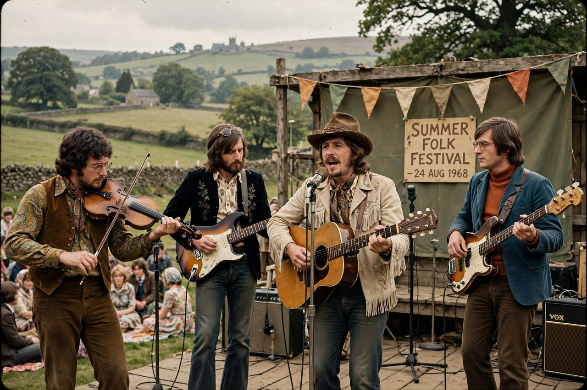

| Fairport Convention | |
| Origin | Muswell Hill, London, England |
|---|---|
| Genres | Folk rock, British folk rock |
| Years active | 1967–1979, 1985–present |
| Key members (classic era) | Sandy Denny, Richard Thompson, Ashley Hutchings, Simon Nicol, Dave Swarbrick, Dave Mattacks |
| Known for | Liege & Lief (1969); the Cropredy Festival |

Fairport Convention are an English folk rock band, formed in 1967 by guitarists Richard Thompson and Simon Nicol, bassist Ashley Hutchings, and drummer Shaun Frater. They are widely credited with inventing British folk rock by electrifying traditional British folk material.
The band took its name from Fairport, the home of Simon Nicol's parents in Muswell Hill, London, where the group rehearsed. Initially influenced by American folk rock acts such as The Byrds, the band recruited singer Sandy Denny in 1968 after the departure of Judy Dyble. Their 1969 album Unhalfbricking included Denny's "Who Knows Where the Time Goes?", later a standard.
Following a motorway crash that killed drummer Martin Lamble, the band — now joined by fiddler Dave Swarbrick and drummer Dave Mattacks — turned decisively to British traditional music. The result, Liege & Lief (1969), is regarded as the landmark album of the British folk rock movement, electrifying ballads and dances such as "Tam Lin" and "Matty Groves". Hutchings left to form Steeleye Span, and Thompson departed in 1971 for a solo career. Denny died in 1978, aged 31.
Fairport's annual festival in the Oxfordshire village of Cropredy, held since the late 1970s and now called Fairport's Cropredy Convention, draws tens of thousands of fans and anchors the band's continuing career through many line-ups.